香川県である。観音寺市である。
観音寺市の名前の由来ともなっている
観音寺。
四国八十八カ所の68番札所でもある古刹だ。
どっちかというと
寺の裏にある銭形の方が有名だけどね。
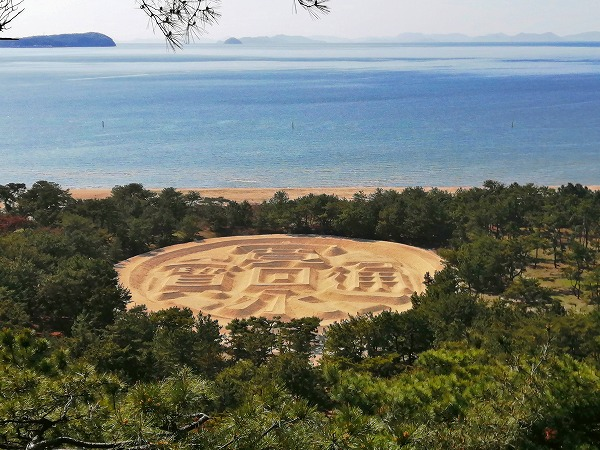
スルーしてもいいのだが、触れたからには説明せねばなるまい。
この銭形、寛永10（1633）年に藩主が領内巡視の際、地元の農民たちが歓迎のため浜に寛永通宝の砂絵を作ったというものが今でも残されているのだ。
事前に知ってはいたが、想像の150パーセント増で大きかった！
…で、銭形を拝んでからの、観音寺。
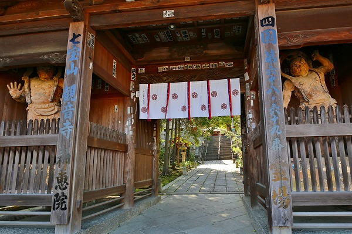
観音寺は68番と69番札所である。
同じ境内に2つの札所が存在しているのだ。
まずは68番69番共用の納経所へ。
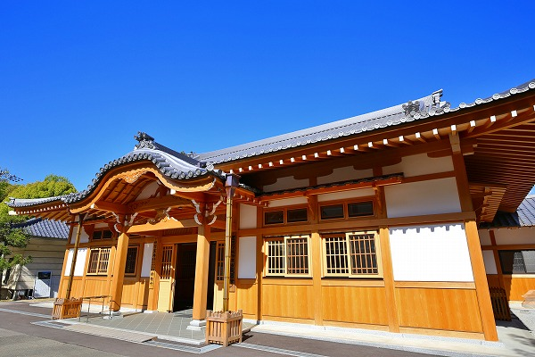
出来たばかりの綺麗な建物の中には
十王像が安置されていた。
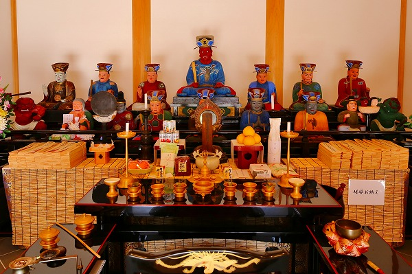
十王と奪衣婆、その他記録係諸々のメンバーが勢揃い。
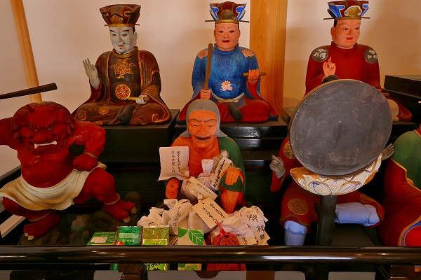
特に奪衣婆だけに大量の紙札が貼られており、この地域の十王信仰における奪衣婆の特異性が目についた。
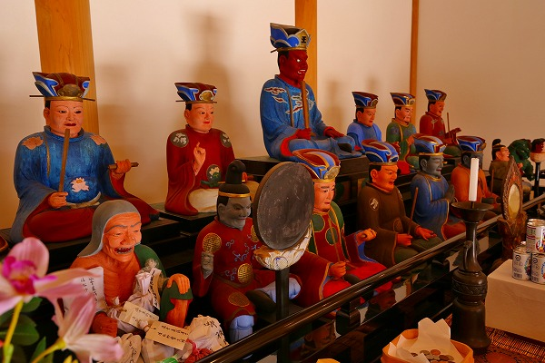
他に司命司録が
この世の者ではない顔色なのが印象的だった。
で、こちらが68番の神恵院の本堂。
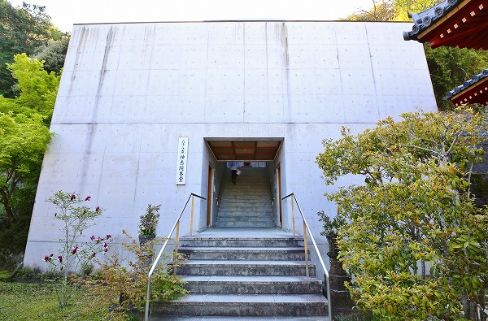
コンクリ打ちっぱなしのマッシブなデザインだ。
中に入ってみると外観に比べて案外オーソドックスな感じの本堂があります。
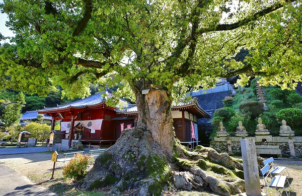
で、69番本堂の前には巨大なクスノキ。
根本の存在感が山脈か！というくらいに凄い。
諸々諸堂お参りしつつ、気持ちを整えて参りました。
と。
ここからが本題です。
クスノキの目の前にある階段を上ると、そこには愛染堂がある。
その前にこんな
マービュラス！なコンクリ像がいらっしゃるのだった。
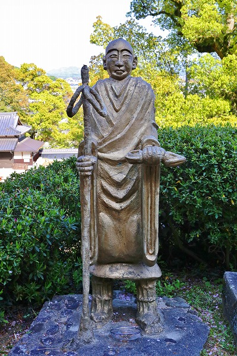
弘法大師像…だよね？
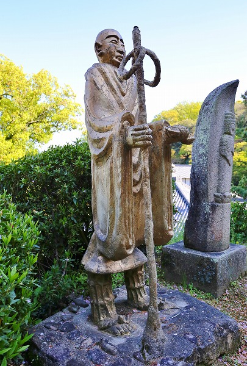
右手に杖、左手に三鈷杵（多分）を持っている。
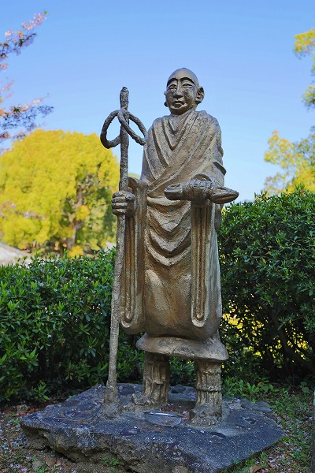
両袖がだらーんと垂れ下がり
振り袖みたいになっちゃってるぞ。
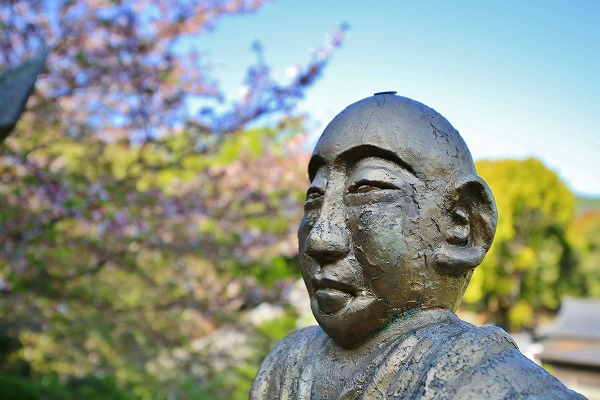
いわゆる私の大好物であるところの
ヘタウマを超越したヘタヘタ仏である。
頭の上にお賽銭がひとつ乗っていた。
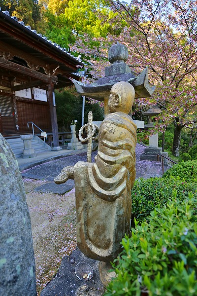
愛染堂を見つめる大師サマ。
特に銘などはなく、一切謎のコンクリ仏であった。
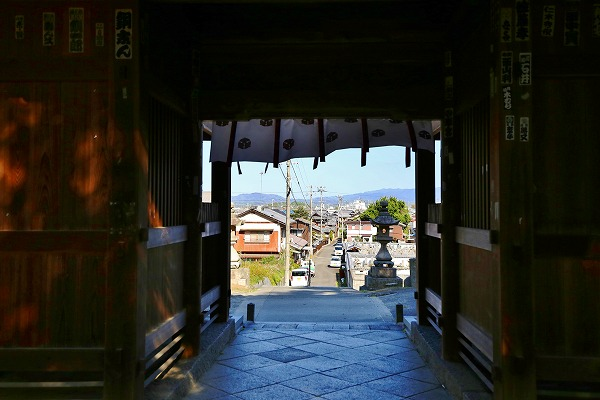
思いがけず、素敵なコンクリ像に出会えて満足であった。
…その後、観音寺から70番札所の本山寺に移動中（別に遍路をしている訳ではないのだが）、川沿いに大きな墓地があった。
当方、
お墓も大好物なもので、旅先でドライブしていてもお墓があったら車を停めないまでも横目でチェックする事だけは怠らないのである。
すると墓地の中に
金色の大仏を発見！
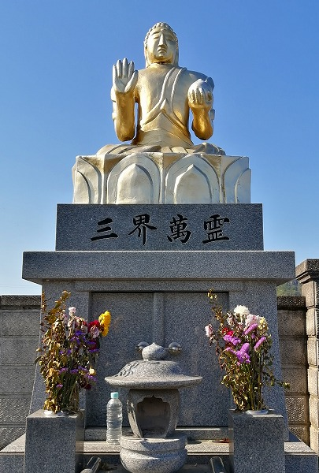
慌てて車を停め、大仏に近づいてみる。
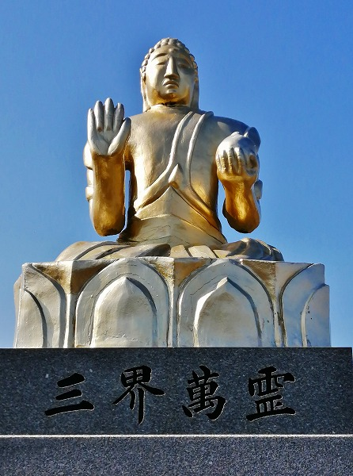
うむー。
これまたイイ味の大仏さんである。
御尊顔はまるで
大仏マスクそっくりじゃないか。
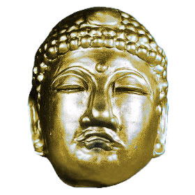
むしろ大仏マスクを参考にしたのではないかと思えるほどだ。
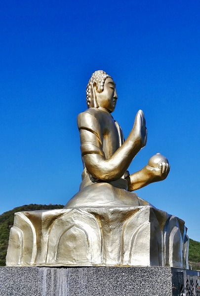
横から見ると手が異様に大きいのが判る。
これもまたヘタヘタ仏によく見られる傾向だ。
台座の部分は納骨堂になっている。
後日、施工業者に確認してみるとこの大仏は
以前からここにあったのだが、台座の納骨堂を作るにあたり金色に塗り直し、上に乗せたそうな。
共通点はあまりみられないが、先程の観音寺と幾らも離れていない場所だけに
同じ作者である可能性もある。
もしもこのコンクリ像の作者について御存じの方がいらっしゃったら是非とも
教えてくださいませ。よろしくお願いいたします！
取材協力；（株）大西石材工業 様